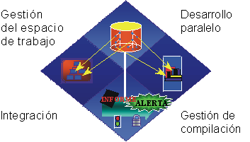

| Gestión de cambios |
 |
|
| Elementos relacionados |
|---|
|
 La gestión de cambios es más que la simple operación de incorporar y extraer archivos. Incluye la gestión de espacios de trabajo, desarrollo paralelo, integración y compilaciones. En el desarrollo de sistemas de software intensivo, un reto clave es que debe tratar con numerosos desarrolladores, organizados en equipos diferentes, posiblemente en lugares diferentes, que trabajan en varias iteraciones, releases, productos y plataformas. Si no dispone de un control estricto, el proceso de desarrollo degenera rápidamente en un proceso caótico. En Rational Unified Process, la disciplina de gestión de cambios y configuración describe cómo superar este reto. Coordinación de las actividades y artefactosLa coordinación de las actividades y artefactos de los desarrolladores y equipos implica el establecimiento de procedimientos que se repiten para la gestión de cambios en el software y en otros artefactos del desarrollo. Esta coordinación permite una mejor asignación de recursos en función de las prioridades y riesgos del proyecto, y gestiona activamente el trabajo en dichos cambios en las iteraciones. Además de desarrollar el software de forma iterativa, esta práctica le permite supervisar continuamente los cambios de modo que puede descubrir activamente problemas y reaccionar ante ellos. Consulte Actividad: Gestionar solicitudes de cambio para obtener más información sobre este tema. Coordinación de iteraciones y releasesLa coordinación de iteraciones y releases implica el establecimiento y la liberación de un línea base al final de cada iteración. El mantenimiento de la rastreabilidad entre elementos de cada release y entre elementos de múltiples releases paralelos es esencial para valorar y gestionar activamente el impacto del cambio. Consulte Actividad: Gestionar los releases de las líneas base para obtener más detalles. Control de los cambios en el softwareEl control de los cambios en el software ofrece un número de soluciones a la raíz de los problemas de desarrollo del software:
|
© Copyright IBM Corp. 1987, 2006. Reservados todos los derechos. |